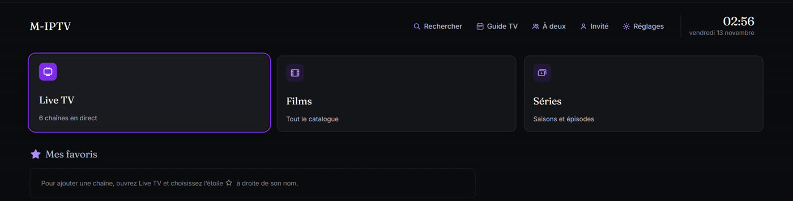

M-IPTV — Tout votre divertissement au même endroit
Retrouvez vos chaînes TV, films, séries et programmes sportifs dans une expérience moderne, simple et agréable.
- Abonnements de 1 à 12 mois
- Application Windows à télécharger librement
- Commande simple par e-mail

Choisissez votre abonnement M-IPTV
Une seule formule, quatre durées. Plus la durée est longue, plus le prix mensuel est doux.
Prix en euros. Commande par e-mail, sans paiement en ligne : l’abonnement est activé sur votre compte après validation de la commande.
Un univers de divertissement à portée de main
La télévision en direct, les films, les séries et le sport, réunis dans une seule application. Le contenu exact dépend de votre offre et des droits de diffusion qui y sont associés.
M-IPTV Windows — Une expérience IPTV supérieure
Découvrez une application IPTV conçue pour profiter pleinement de vos contenus sur ordinateur. Avec son interface moderne, ses outils d’organisation intelligents et son lecteur multimédia avancé, M-IPTV Windows vous offre une expérience plus complète, plus personnalisable et plus confortable qu’un lecteur IPTV basique.
- Elle ne comprend pas d’abonnement IPTV à vie : l’accès aux contenus nécessite un abonnement valide, distinct.
- Elle ne donne pas accès aux versions Android TV, Google TV, Android, iOS ou macOS.
- Les conditions exactes de la licence et des mises à jour sont précisées dans les conditions de licence.
Ce que vous apporte l’application
- Interface moderne, pensée pour le PC
- Lecteur vidéo avancé
- Chaînes TV en direct
- Films et séries
- Guide TV
- Favoris
- Historique
- Reprise de lecture
- Recherche intelligente
- Clean Library : chaînes en double réunies
- Choix de la qualité (versions HD, FHD…)
- Conversion du son des flux non compatibles
- Retour en arrière sur le direct
- Télécommande depuis votre smartphone
- Outils de diagnostic et centre de santé
- Compte M-IPTV
Composez votre commande
Choisissez la durée, ajoutez si vous le souhaitez l’application Windows à vie, puis envoyez votre demande par e-mail. Aucun paiement n’est demandé sur ce site.
Questions fréquentes
Comment commander ?
Choisissez votre formule dans « Composez votre commande », puis cliquez sur « Commander par e-mail ». Votre messagerie s’ouvre avec un message prêt à envoyer. Vous pouvez aussi écrire directement à m-iptv-fr@proton.me.
Comment recevoir mes accès ?
Les modalités d’activation vous sont communiquées après validation de la commande. Votre abonnement est ensuite activé sur votre compte M-IPTV : il suffit de vous connecter dans l’application avec ce compte.
Faut-il créer un compte ?
Oui. Un compte M-IPTV est nécessaire pour accéder aux services commerciaux liés à un abonnement M-IPTV. Créer un compte ne prend qu’une minute.
L’application Windows est-elle gratuite à télécharger ?
Oui, son téléchargement est libre, sans compte. L’utilisation des fonctions commerciales soumises à licence ou à abonnement nécessite les droits correspondants : télécharger l’application ne donne pas, à lui seul, accès aux contenus.
Que comprend la licence Windows à vie ?
Elle concerne exclusivement le logiciel M-IPTV pour PC Windows. Elle ne comprend aucun abonnement IPTV à vie et ne s’applique pas aux autres appareils.
Quels appareils sont compatibles ?
Aujourd’hui : les ordinateurs Windows 10 et 11 (64 bits). Les autres plateformes seront annoncées ici dès qu’elles seront disponibles.
Quels contenus sont inclus ?
Le catalogue dépend de l’offre et des droits de distribution qui y sont associés. Contactez-nous pour connaître le détail à jour avant de commander.
Comment contacter M-IPTV ?
Par e-mail : m-iptv-fr@proton.me.
Une question avant de commander ?
Écrivez-nous, nous vous répondons par e-mail.